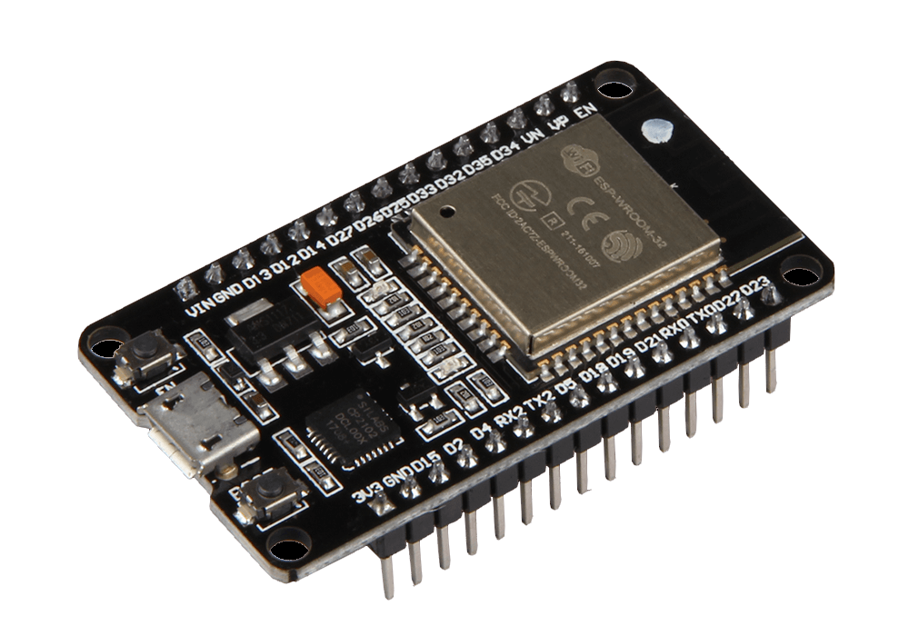
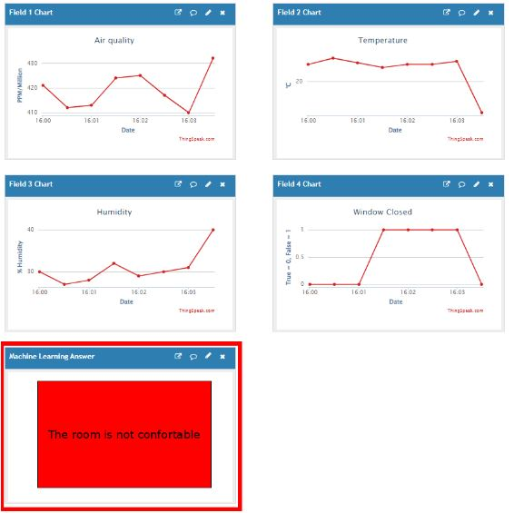
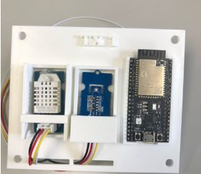

2 - My internship experience
Working on the project they gave me turned out to be very pleasant even if the main themes were completly new to me.
I had to work with small devices called boards that look like this:

An ESP32 board
It is commonly used in electronic engineering to do on-board computing, which is the field of computer science that specialize in small programs running on small devices but are very efficient.
I had to connect different sensors to these boards in order to measure the temperature, the humidity and the air quality in the room. I then had to send the data to a website where a machine learning algorithm was localized. This algorithm's job was to tell us if the room was either comfortable or not. For example, if the temperature was a bit too low, or too high, the algorithm would have told us the room was not comfortable.

The different metrics recorded and the result of the algorithm
I even did a little bit of 3D printing to fix the sensors on the different walls of the room.

3D printed build that embeds the ESP and the sensors
Next Page